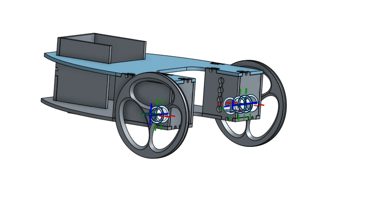
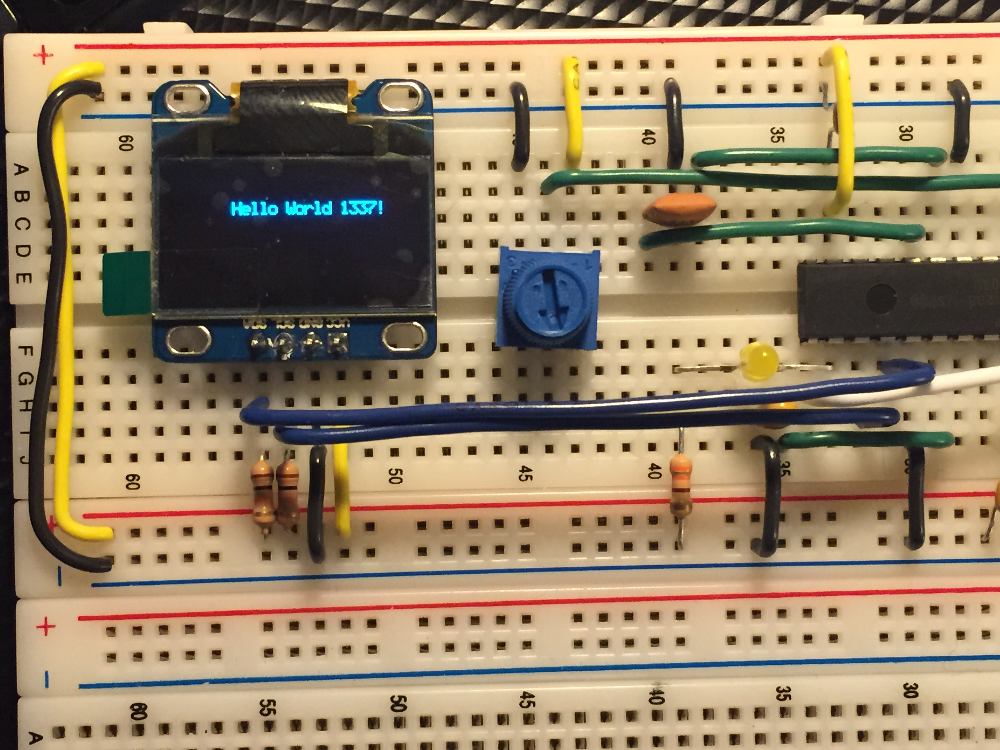
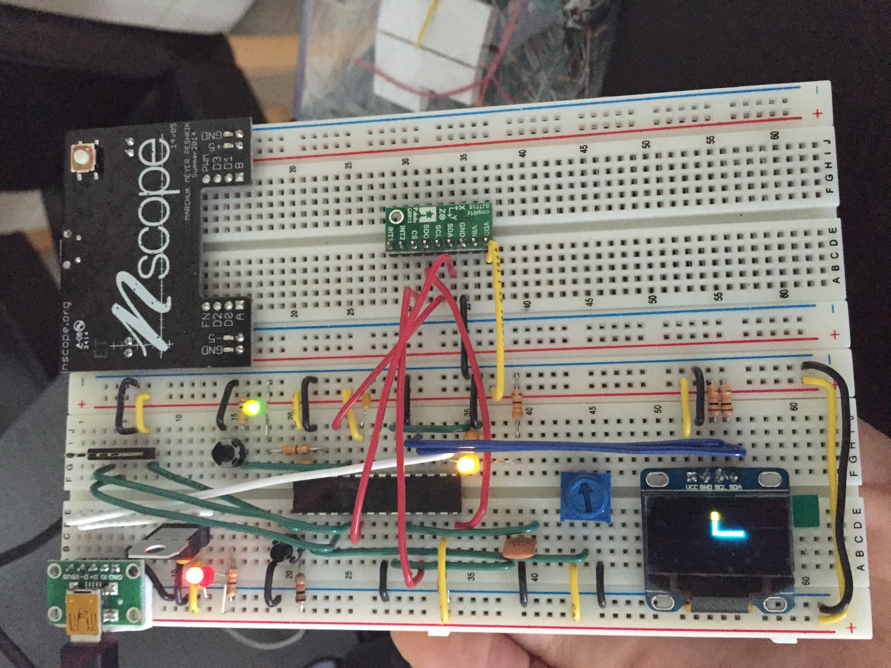

Line Follower with Android
Line follower using PIC32, Android app and Motorola G camera sensor for final project

Object Design in Onshape
Designing line follower parts on Onshape online CAD

OLED Display
Displaying words and shapes on OLED display using Microchip PIC32

Snake Bar
Displaying bar on OLED and moving based on the accelerometer data